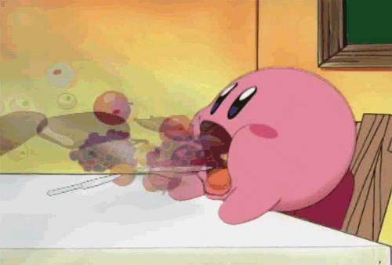
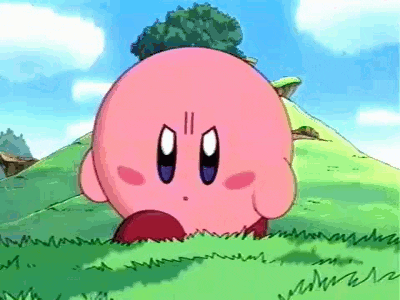
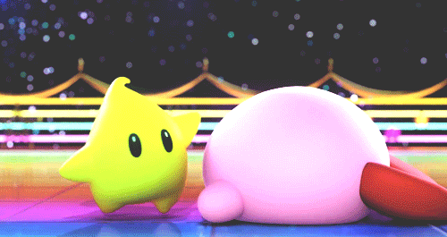

Everything about Kirby

Character
Kirby is well known for his ability to inhale objects and creatures to gain their powers, as well as his ability to float by expanding his body. He uses these abilities to rescue various lands, including his homeworld of Planet Popstar, from evil forces and antagonists, such as Dark Matter or Nightmare. On these adventures, he often crosses paths with his rivals, King Dedede and Meta Knight, though Meta Knight can be seen as a hero, depending on the game. Kirby has been described as one of the most legendary video game characters of all time by PC World. In virtually all his appearances, Kirby is depicted as cheerful, innocent and food-loving; however, he becomes fearless, bold and clever in the face of danger.

Physical Appearance
Kirby has a pink, spherical, body with small stubby arms and large red feet. His eyes are a distinctive oval shape and are white (eye shine) at the top, black in the center and dark blue on the bottom (all black in early games) with rosy cheek-blushes near his eyes. His body is soft and flexible, allowing him to stretch or flatten and adopt different shapes, open his mouth really wide to inhale foes, or inflate himself with air and fly. He is 20 cm (about 8 in) tall in Kirby: Nightmare in Dream Land, Kirby's Return to Dream Land and Kirby & the Amazing Mirror, different colored Kirbys appear as other players in multi-player games. In the case of the latter, they are the result of Kirby being divided into four by Dark Meta Knight.

Personality
Kirby hails from the distant Planet Popstar, where he lives in a dome-shaped house in the country of Dream Land. He has a positive attitude, and frequently helps to save Dream Land through the use of his unique powers. His age is never directly stated, although he is referred to as a "little boy" in the English manual for Kirby's Dream Land, described as a baby in the anime, and was referred to as being a "jolly fellow" in Kirby Super Star. Kirby is cheerful and innocent. He is often depicted with a voracious appetite. His other hobbies include singing, although he is tone-deaf.
Abilities
Kirby's main ability is inhaling enemies and objects and spitting them out with incredible force. Both his mouth and body expand to allow him to inhale things much larger than himself. However, there is a limit to what he can inhale; excessively large or heavy foes like bosses can resist Kirby's inhale. Against these opponents Kirby must find smaller characters to use as ammo or intercept his opponent's attacks and send them back at them.